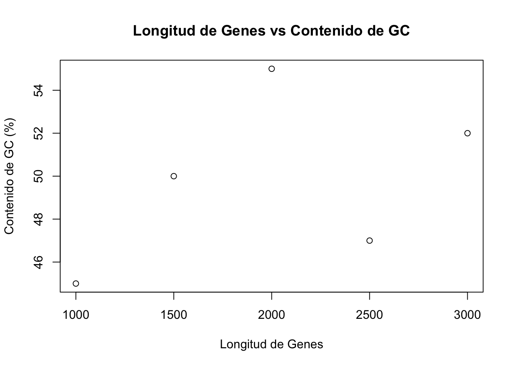
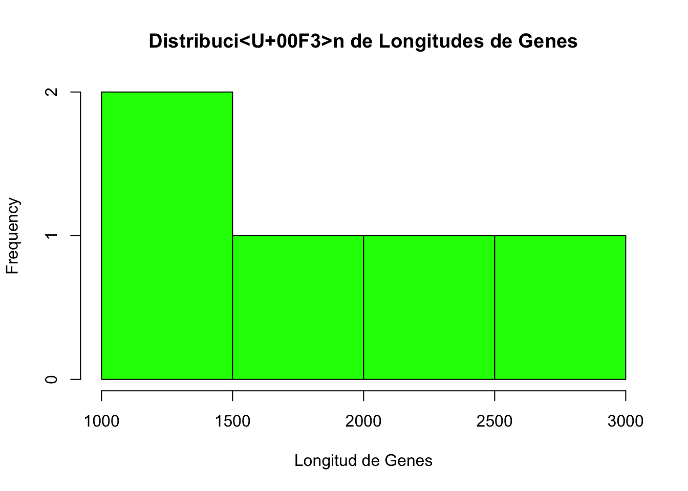
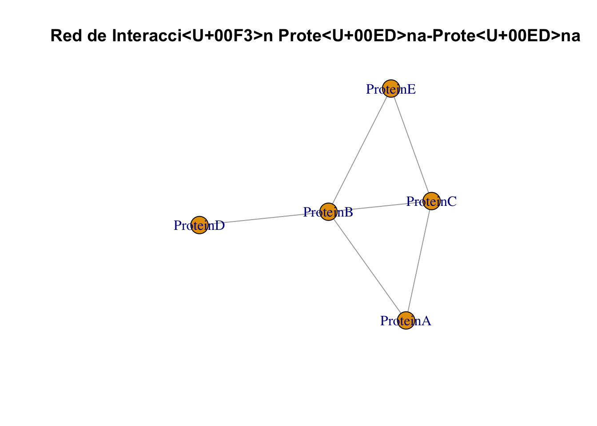
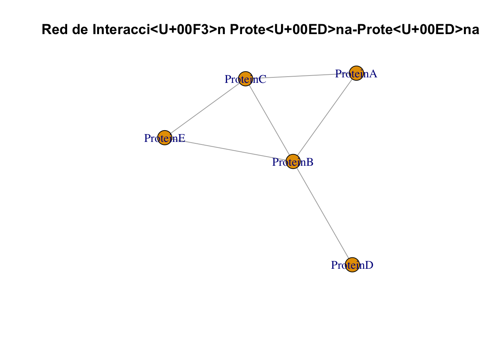

# Calcular el contenido de GC de una secuencia de ADN
g <- 200
c <- 180
a <- 150
t <- 170
# Número total de nucleótidos
total_nt <- g + c + a + t
# Porcentaje de contenido de GC
gc_content <- ((g + c) / total_nt) * 100
gc_content[1] 54.28571Bienvenidos a la Reintroducción a R. En esta sesión de una hora, aprenderás y os recordaremos los conceptos básicos de la programación en R con ejemplos relacionados con la biología y la bioinformática, incluyendo una introducción al análisis de redes usando igraph.
Al final de este tutorial, podrás: - Entender la sintaxis básica y la estructura de R - Realizar operaciones simples con datos - Crear gráficos básicos relevantes para la biología y la bioinformática - Entender los conceptos básicos del análisis de redes con igraph
R es un lenguaje poderoso para la computación estadística y gráfica, ampliamente utilizado en bioinformática. Para empezar a usar R, necesitas tener R y RStudio instalados en tu ordenador. Puedes descargarlos desde los siguientes enlaces: - Descargar R - Descargar RStudio
Comencemos con algunos comandos y operaciones básicas en R. Abre RStudio y prueba los siguientes ejemplos.
El contenido de GC se refiere al porcentaje de bases nitrogenadas guanina (G) y citosina (C) en una molécula de ADN. Es una medida importante porque:
# Calcular el contenido de GC de una secuencia de ADN
g <- 200
c <- 180
a <- 150
t <- 170
# Número total de nucleótidos
total_nt <- g + c + a + t
# Porcentaje de contenido de GC
gc_content <- ((g + c) / total_nt) * 100
gc_content[1] 54.28571En R, puedes asignar valores a variables utilizando el operador <-. Una variable es una forma de almacenar información que puedes usar y manipular más adelante.
# Asignar longitudes de secuencias de ADN a variables
length_gene1 <- 1500
length_gene2 <- 1200
# Imprimir las variables
length_gene1[1] 1500length_gene2[1] 1200# Realizar operaciones con variables
total_length <- length_gene1 + length_gene2
total_length[1] 2700R tiene varios tipos de datos, incluyendo numeric (números), character (texto) y lógicos (TRUE/FALSE).
# Numérico
sequence_length <- 1500
class(sequence_length)[1] "numeric"# Caracter
species <- "Homo sapiens"
class(species)[1] "character"# Lógico
is_protein_coding <- TRUE
class(is_protein_coding)[1] "logical"R proporciona varias estructuras de datos como vectores, matrices, listas y data frames. Vamos a explorar algunas de estas.
Los vectores son la estructura de datos más básica en R y pueden contener una secuencia de elementos del mismo tipo.
# Crear un vector numérico de longitudes de genes
gene_lengths <- c(1000, 1500, 2000, 2500, 3000)
gene_lengths[1] 1000 1500 2000 2500 3000# Crear un vector de caracteres de nombres de genes
gene_names <- c("GeneA", "GeneB", "GeneC", "GeneD", "GeneE")
gene_names[1] "GeneA" "GeneB" "GeneC" "GeneD" "GeneE"Los data frames se utilizan para almacenar datos tabulares. Piensa en un data frame como una tabla donde cada columna puede contener diferentes tipos de datos (numéricos, caracteres, etc.).
# Crear un data frame con información de genes
genes_df <- data.frame(
Name = gene_names,
Length = gene_lengths,
GC_Content = c(45, 50, 55, 47, 52)
)
genes_df Name Length GC_Content
1 GeneA 1000 45
2 GeneB 1500 50
3 GeneC 2000 55
4 GeneD 2500 47
5 GeneE 3000 52# Acceder a elementos del data frame
genes_df$Name # Acceder a una columna por nombre[1] "GeneA" "GeneB" "GeneC" "GeneD" "GeneE"genes_df[1, ] # Acceder a la primera fila Name Length GC_Content
1 GeneA 1000 45genes_df[, "Length"] # Acceder a una columna por nombre usando índices[1] 1000 1500 2000 2500 3000R es bien conocido por sus potentes capacidades de graficación. Aquí, crearemos un gráfico simple usando la función incorporada plot.
# Gráfico de dispersión básico de longitudes de genes vs contenido de GC
plot(genes_df$Length, genes_df$GC_Content, main="Longitud de Genes vs Contenido de GC", xlab="Longitud de Genes", ylab="Contenido de GC (%)")
# Histograma básico de longitudes de genes
hist(genes_df$Length, main="Distribución de Longitudes de Genes", xlab="Longitud de Genes", col="green", border="black")
igraphEl análisis de redes es un aspecto crucial de la bioinformática, especialmente en la comprensión de vías e interacciones biológicas. El paquete igraph en R es una herramienta poderosa para crear y analizar grafos.
igraphPrimero, necesitas cargar el paquete igraph.
¿Qué es un Paquete en R? En R, un paquete es una colección de funciones, datos y código que extienden las capacidades básicas del lenguaje. Los paquetes son creados por la comunidad de R y están diseñados para abordar tareas específicas, desde análisis estadísticos avanzados hasta visualización de datos y manejo de datos biológicos. Los paquetes facilitan el trabajo con R al proporcionar herramientas adicionales que puedes usar en tus scripts y análisis.
Instalación y Carga de Paquetes Para utilizar un paquete en R, primero necesitas instalarlo (si no está ya instalado) y luego cargarlo en tu sesión de R.
Instalación de Paquetes Puedes instalar un paquete desde CRAN (Comprehensive R Archive Network) utilizando la función install.packages():
Ahora vamos a cargar un paquee que ya esta instalado, usando el comando library()
# Cargar paquete igraph
library(igraph)
Attaching package: 'igraph'The following objects are masked from 'package:stats':
decompose, spectrumThe following object is masked from 'package:base':
unionRepresentar proteínas en un formato de red puede ser útil por varias razones:
Vamos a crear una red simple de interacciones proteína-proteína.
# Definir aristas (interacciones) entre proteínas
edges <- c("ProteinA", "ProteinB",
"ProteinA", "ProteinC",
"ProteinB", "ProteinC",
"ProteinB", "ProteinD",
"ProteinB", "ProteinE",
"ProteinC", "ProteinE")
# Crear un objeto de grafo
g <- graph(edges, directed=FALSE)
# Graficar el grafo
plot(g, vertex.label=V(g)$name, main="Red de Interacción Proteína-Proteína")
Puedes realizar varios análisis en la red, como encontrar el grado de cada nodo.
# Calcular el grado de cada nodo
degree(g)ProteinA ProteinB ProteinC ProteinD ProteinE
2 4 3 1 2 # Graficar el grafo con tamaños de nodo proporcionales a su grado
plot(g, vertex.size=degree(g)*10, vertex.label=V(g)$name, main="Red de Interacción Proteína-Proteína (Tamaño del Nodo ~ Grado)")
Ahora has sido introducido a los conceptos básicos de la programación en R con ejemplos relevantes para la biología y la bioinformática. Hemos cubierto operaciones aritméticas básicas, asignación de variables, tipos de datos, estructuras de datos, graficación simple y una introducción al análisis de redes con igraph. Continúa practicando para familiarizarte más con R y explora temas más avanzados a medida que progresas.